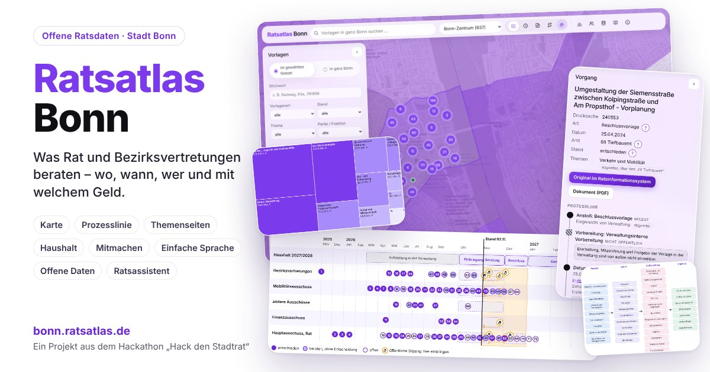

Ratsentscheidungen vor der eigenen Haustür
Der Ratsatlas zeigt öffentliche Vorlagen aus kommunalen Ratsinformationssystemen auf Karte und Zeitleiste: den Ort einer Planung, die beratenden Gremien und den weiteren Verlauf. Jede Angabe führt zurück zur Quelle.
Städte im Ratsatlas
Jede Stadt hat eine eigene Instanz unter eigener Adresse. Weitere Städte folgen schrittweise.
-

Ratsatlas Bonn
Vorlagen aus dem Ratsinformationssystem der Stadt Bonn auf Karte und Zeitleiste
- Adresse
- bonn.ratsatlas.de
- Datenquelle
- OParl-Schnittstelle der Stadt Bonn
- Status
- Online
- Ratsatlas Köln In Vorbereitung koeln.ratsatlas.de · OParl-Schnittstelle der Stadt Köln
Öffentlichkeit braucht Übersicht
Kommunale Entscheidungen prägen den Alltag: Schulwege, Plätze, Radwege, Bebauung, Grünflächen. Die Unterlagen dazu sind öffentlich. Ihr Verständnis erfordert dennoch viel Zeit und Vorwissen.
-
Öffentlich heißt noch nicht zugänglich
Vorlagen verteilen sich auf viele Sitzungen, Gremien und PDF-Dokumente. Die Suche nach Planungen in der eigenen Straße kostet oft Stunden.
-
Entscheidungen haben einen Ort
Fast jede Vorlage betrifft einen konkreten Ort. Die Karte macht Beratungen in der Nachbarschaft sichtbar, ebenso in anderen Stadtteilen.
-
Nachvollziehbarkeit als Grundlage der Teilhabe
Kenntnis der Beratungen ermöglicht Information, Nachfrage und Mitsprache: in Bürgersprechstunden, Bezirksvertretungen, Initiativen oder im Gespräch mit Ratsmitgliedern. Der Ratsatlas bietet dafür eine verlässliche Grundlage.
Von der Vorlage zur Karte
Der Ratsatlas erzeugt keine eigenen Inhalte. Er ordnet die Veröffentlichungen der Städte.
-
Vorlagen aus dem Ratsinformationssystem
Grundlage bilden die öffentlichen Vorlagen der Stadt, abgerufen über ihre offene Schnittstelle (OParl).
-
Verortung
Nennt eine Vorlage eine Straße, einen Platz oder einen Stadtteil, erscheint sie auf der Karte. Wohnadressen von Privatpersonen bleiben unverortet.
-
Beratungsverlauf
Die Zeitleiste zeigt die Beratungen in Ausschüssen, Bezirksvertretungen und Rat sowie die beteiligten Ämter.
-
Quellenbezug
Jede Angabe verweist auf das Originaldokument im Ratsinformationssystem. Abgeleitete Angaben, etwa ein Ort oder ein Thema, tragen eine Kennzeichnung.
Mitwirkung
Der Ratsatlas lebt von Aufmerksamkeit, Hinweisen und Beiträgen aus der Stadtgesellschaft. Vier Wege stehen offen.
-
Beratungen verfolgen
Der Ratsatlas Ihrer Stadt zeigt die Vorlagen für den eigenen Stadtteil, für ein Thema oder für ein Gremium und ihren aktuellen Beratungsstand.
-
Hinweise geben
Eine falsche Verortung, ein fehlender Ort, ein Fehler in der Darstellung: Jeder Hinweis verbessert die Grundlage für alle.
-
Eine Stadt anregen
Viele Kommunen veröffentlichen ihre Ratsunterlagen über eine offene Schnittstelle. Anregungen für weitere Städte und Kontakte zu Initiativen vor Ort sind willkommen.
-
Mitentwickeln
Quellcode und Gestaltung stehen unter freier Lizenz. Beiträge zu Verortung, Barrierefreiheit, Texten und Technik sind willkommen.
Grundsätze
- Quellentreue
- Jede Angabe stammt aus den Veröffentlichungen der Stadt und verweist auf das Originaldokument. Abgeleitete Angaben tragen eine Kennzeichnung.
- Unparteilichkeit
- Der Ratsatlas bewertet keine politischen Positionen, Fraktionen oder Entscheidungen. Er ordnet und macht sichtbar.
- Offenheit
- Der Quellcode steht unter MIT-Lizenz, die Daten stammen aus offenen Schnittstellen der Städte. Verfahren und Prüfergebnisse sind öffentlich dokumentiert.
- Datensparsamkeit
- Keine Cookies, keine Reichweitenmessung, keine Werbung. Anfragen an fremde Server nur auf ausdrückliche Wahl, etwa für eine farbige Karte.
- Barrierearmut
- Gestaltung und Prüfung richten sich nach den Anforderungen der WCAG 2.1 auf Stufe AA: Bedienung per Tastatur, ausreichende Kontraste, Rücksicht auf reduzierte Bewegung.